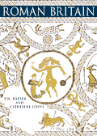

|
|
Featured BookRoman Britain
This is an authoritative account of Roman Britain, written by two leading scholars in the field. The late Tim Potter was Keeper of Prehistory and Early Europe in The British Museum and Catherine Johns has been a curator for Roman Britain for 34 years. Catherine has updated the book to include recent material like the Hoxne hoard. T. W. Potter and C. Johns, The British Museum Press 2002. ISBN: 0 7141 2774 4 |
Journals and Popular Magazines:
Numerous other national journals and county journals contain articles on Roman Britain For recent excavations and research, see the following organisations for publish news:
|
 The Leadenhall Street Mosaic
(Bacchus on a tiger) from Leadenhall Street, London. 1st or 2nd century AD |
|||
|
home |
visit |
what's on |
join |
shop |
learning |
COMPASS |
world cultures |
sitemap |
contact us |
copyright
© The British Museum, 2002 |
|||||